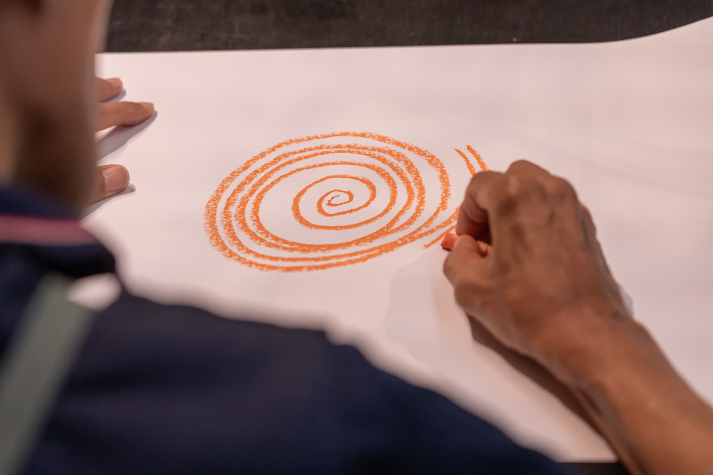
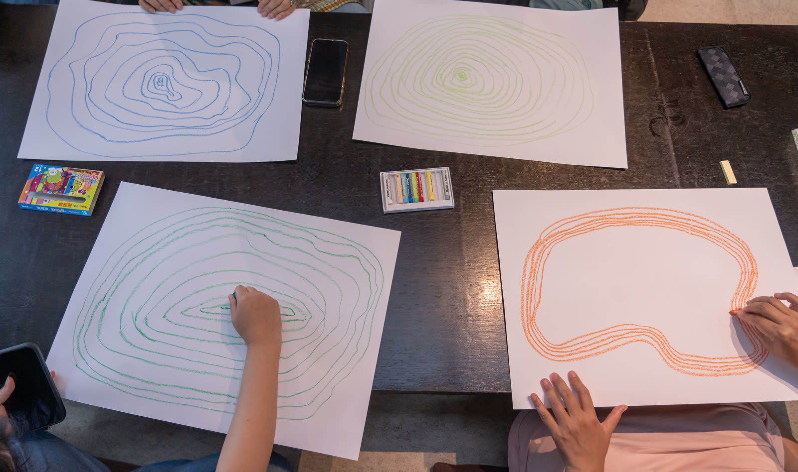
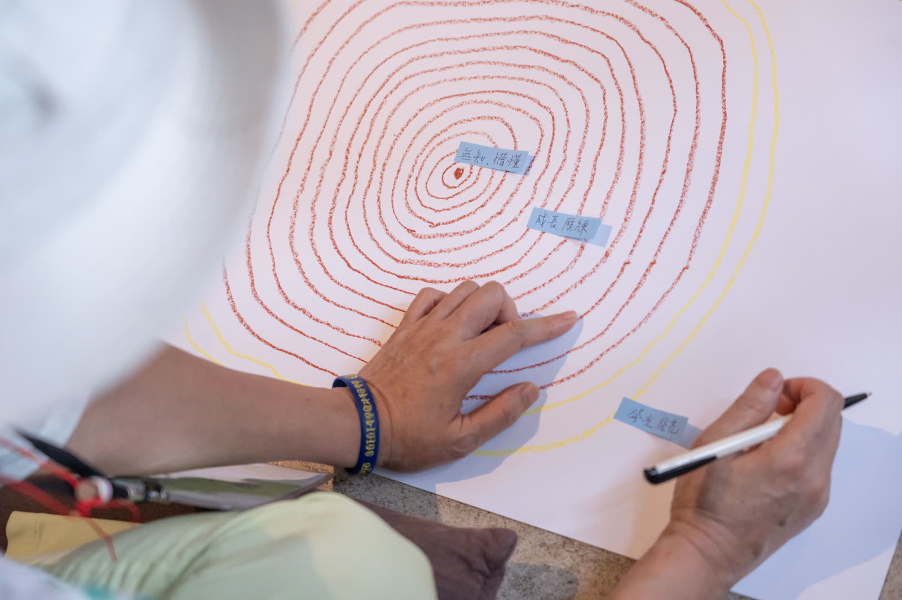
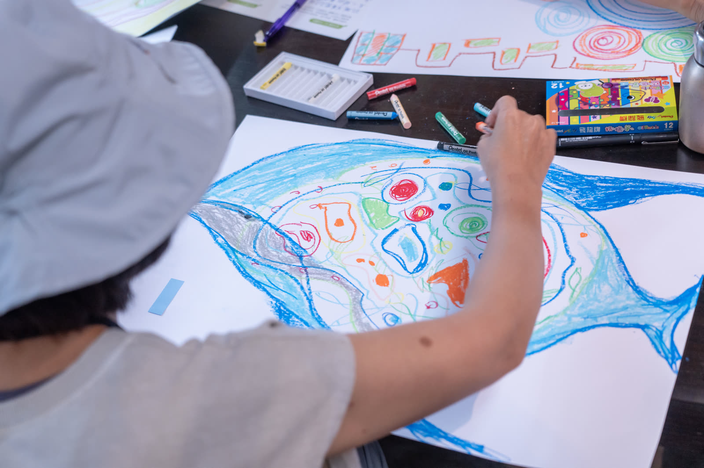

打開地方未來式
OPENING THE NEXT DECADE
從一圈年輪開始，回望基地的生長，也一起描繪下一個十年。
為什麼是「年輪」
每一個文化基地，都有自己的生長方式。
有些年份快速成長，有些時候停下來；有些經驗留下清楚的痕跡，也有一些困難形成裂縫。基地一路走來累積的人、事、地方關係與選擇，就像年輪一樣，不一定完整或對稱，卻記錄著自己的生長節奏。
「打開地方未來式」以年輪作為交流媒介，邀請基地工作者先回望自己，再打開彼此的經驗，從故事、困境、資源與關係中，一起思考地方的下一步。
現場紀錄
基地工作者在交流工作坊現場，用蠟筆畫下自己基地的年輪，在缺口處留下提問，也在彼此的圖上留下回應。




一張年輪，留下的不只是基地的過去
從自己的年輪開始，到別人在年輪上留下痕跡，「打開地方未來式」讓基地的過去、現在與未來出現在同一張圖上。年輪裡留下基地一路走來的故事，也留下正在面對的缺口、其他夥伴的回應，以及未來可能繼續生長的關係。
地方的未來，不需要一次被畫完。重要的是，先讓下一圈開始生長。
前往共創展 →